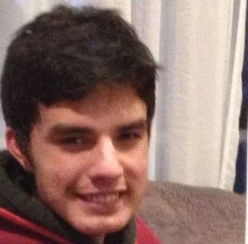
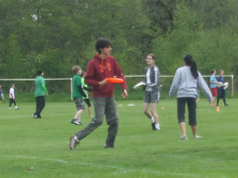
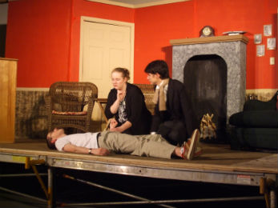
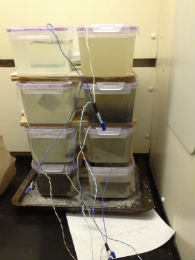
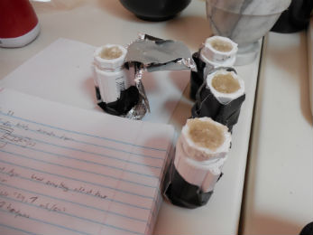
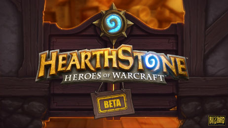

About the Author
Last Edited: March 8, 2014
I was born on May 24, 1995 in Vancouver, Washington. Ever since I was little, I have loved computers. I used to love playing games so much, I wouldn't even like to stop to eat or go to the bathroom. Until recently, this interest did not extend beyond computer games, but during a summer program at Cornell, I discovered my absolute love of programming. I have since developed this interest even further by taking classes in HTML and MATlab language. In the future, I hope to major in computer science at Caltech. Someday, I hope to be part of a project that will use programming to make an influence on the world-wide community.
 Outside of programming, I has a plethora of extracurricular interests. I am a member of the the SST ultimate Frisbee team and I am really looking forward to showing off my skills at the spring league in a couple months. Outside of computers, acting is my biggest passion. Acting is my way of showing the world who I am. While many people deeply fear public speaking, I instead thrive in this terrifying environment. My favorite roles involve a wide range of emotions that force me to look inside myself and draw on personal experiences to express my character’s feelings. When pretending to be someone else on stage, I can share parts of myself without fear of rejection, for theater is the one place where the unusual and strange are applauded while the mundane and average are ignored. After playing several lead parts, I have graduated to the role of director this year. By making all the complex parts of a performance weave together, much like engineering, I strive to encourage the audience to embrace the uniqueness in themselves and others.
 I doesn't restrict my academic interests to just computer science. I am eager to get involved in projects that combine divergent STEM disciplines to make a positive impact on the world. Every year, I have created a Science Fair project that involves a field new to me so that I can test the waters to explore different aspects of the physical sciences and engineering. My previous projects involved designing water sampling devices and low-cost, alternate-power-producing equipment. This year, my group is developed a microbial fuel cell (MFC) to convert biological waste into usable energy. I hope to continue improving these potentially great sources of renewable fuel and waste treatment for use world-wide.
When I'm not being productive, I love doing things that challenge my mind. I especially enjoy playing games of any kind. Card games, board games, and video games all really force you to think and make good decisions, which is very fun for me. I also love to be taken into worlds that are unlike the one we live in through books and video games, A really good book or game can make you forget who you are and make you become someone new, much like acting. Poetry also evolves a similar experiences by making you feel things you normally wouldn't. Overall, I love thinking and experiencing new worlds through games, books, and poetry. That's it about me. Enjoy the website!